On August 30, 2016, the famous photographer Marc Riboud died in France at the age of 93.
As early as 1957, Marc became the first Western photographer allowed to enter China to shoot in the 1950s. Over his life he took countless works on Chinese themes, and he had very deep ties with China.
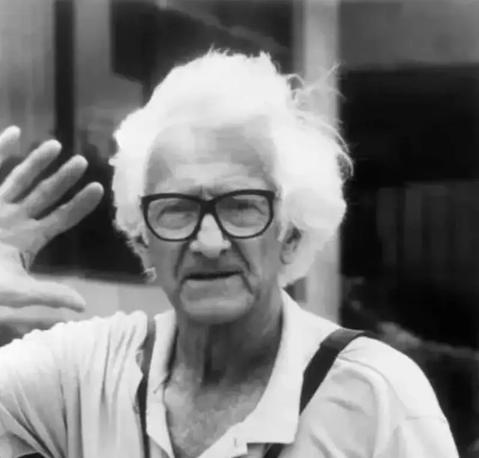
Marc Riboud, a famous French photographer. He was born on June 24, 1923, in Lyon, France, and became widely known for his wide reporting on the Eastern world. In 1952 he met Henri Cartier-Bresson and Robert Capa, and later joined the famous Magnum Photos.
When Marc Riboud was 18, he told himself,
he should go on an adventure.
He said,
“I like to leave home,
to break free of all ties,
and to observe, as far as I can, the events that change this era.
But this observation is not only out of curiosity,
It is more like the passion stirred up after I see things that inspire me.
I love the fleeting joy when I find order in chaos.”
Because he forgot to return to the factory to work while taking photos in Paris,
he broke off his path as an engineer,
and began a career in photography.
He spent his whole life shooting
the “decisive moment.”
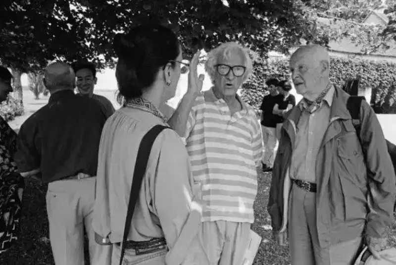
Marc Riboud and Cartier-Bresson
When he met the master Cartier-Bresson, Marc Riboud was still only an engineer. “At 30, I first came to the capital and had just started in the art of photography. I met Henri Cartier-Bresson. Before any discussion, he persuaded me to use an old viewfinder, which had the strange trait of turning the image upside down.” This is how Marc recalled it in his book On the Art of Photography.
He pressed the shutter on instinct,
and it became the ticket that let him into Magnum.
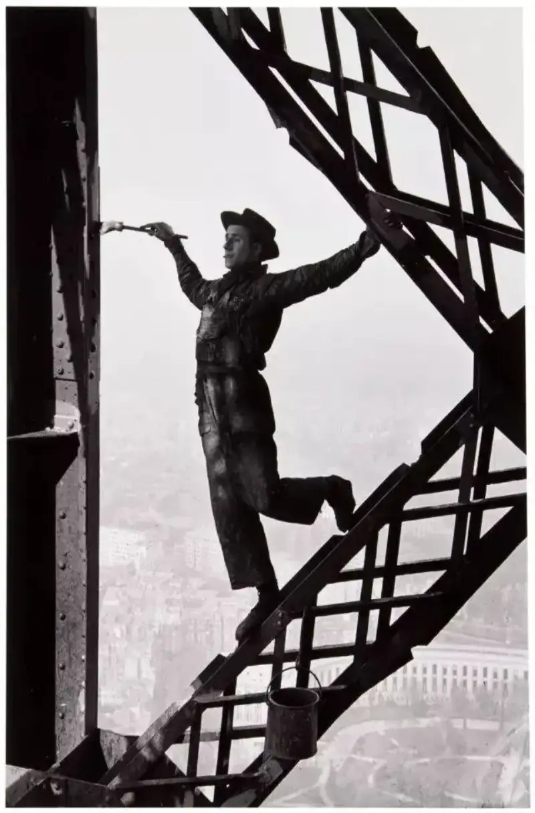
In 1953, this reserved man from Lyon tried to get to know Paris. He carried the viewfinder Cartier-Bresson gave him and a box of film. He spent an hour climbing the symbol of Paris, the Eiffel Tower. When he began to shoot, he did not know that the world through the old viewfinder was upside down. A moment of dizziness nearly made him fall. Looking through the old viewfinder, he suddenly saw a man hanging upside down in midair. On instinct he pressed the shutter, and this photo, The Painter on the Eiffel Tower, dancing, was born. It also became his ticket into Magnum. Cartier-Bresson picked this frame from the whole roll, and the editor Maurice sold it to LIFE magazine, the dream of every professional photographer at the time.
He became famous photographing Paris,
but he did not choose to spend his whole life
watching the same city.
He chose instead to be a wanderer of the world.
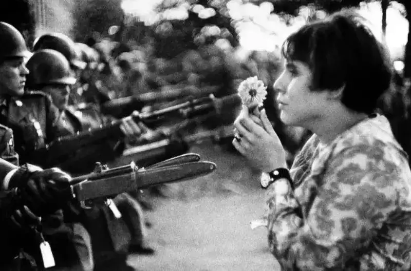
Flowers and Guns, 1967. The girl holding a flower is Jan Rose Kasmir. That day she was 17 and living with a foster family in Maryland. She had just got off the bus and walked into the protest line, finally facing armed soldiers and police. She held only a single flower. Jan Rose said, “The army is a war machine, but the soldiers are people, all flesh, blood, and feeling.” The historic moment of her standing before fully armed soldiers and police, holding a flower, was captured by the photographer Marc Riboud.
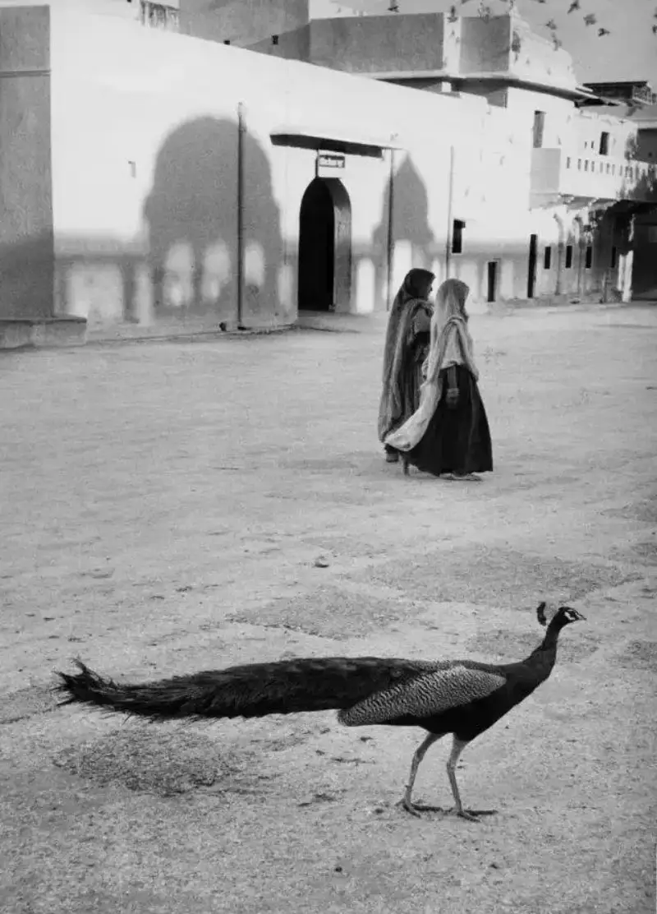
Jaipur, India, 1956
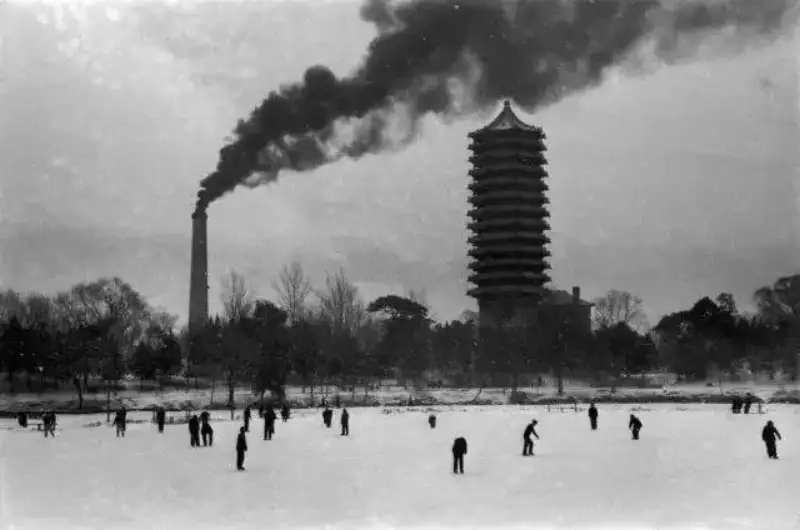
Beijing, 1957
He refused to let others call him a photographer,
and said he was only “a person who takes pictures.”
As he wandered the world,
he preferred to stand at the edge or the back of major events,
and watch the center.
Hankou, Hubei. The Hankou Yangtze River Bridge, built with Soviet aid, under construction, 1957
Starting to photograph China
in this special year of 1957
was,
for him, also entirely by chance.
After Magnum Photos sent him to India in 1955, he met the French envoy to China there. Through this connection, at the end of 1956 he was allowed to enter China to shoot, and became one of the first Western journalists to enter the new China after 1949. He traveled from India via Hong Kong to Guangzhou, then headed north, and for the first time recorded the Chinese landscape along the way, including what he saw in Wuhan and the Yangtze River Bridge under construction. The many black and white photos this famous French photographer took have become a historical archive of a China in great change.
“This is the first photo I took in China. It was at the end of 1956, on the train from Hong Kong to Guangzhou, crossing the border. In other words, I took it as I moved from one world into another. Judging by her luggage, the woman in black was a peasant, though her mature grace made her seem to live in a city. People who saw parts of Asia thought those people had no human dignity at all, and that they lived in total abandonment. This photo immediately changed that impression,” Marc Riboud said.
He said,
“The eyes are for seeing,
not for thinking.
Photography is not an intellectual process,
it is a process of seeing.”
As the fifth of seven children in a large family, “the chance to speak at home was ruthlessly taken by the older children, so all I could do was watch and listen. Perhaps that is why my eyes were kept busy and trained.” The shyest child in the family came to photography because his father was an enthusiastic traveler and amateur photographer, who gave him a Kodak camera at the age of 14.
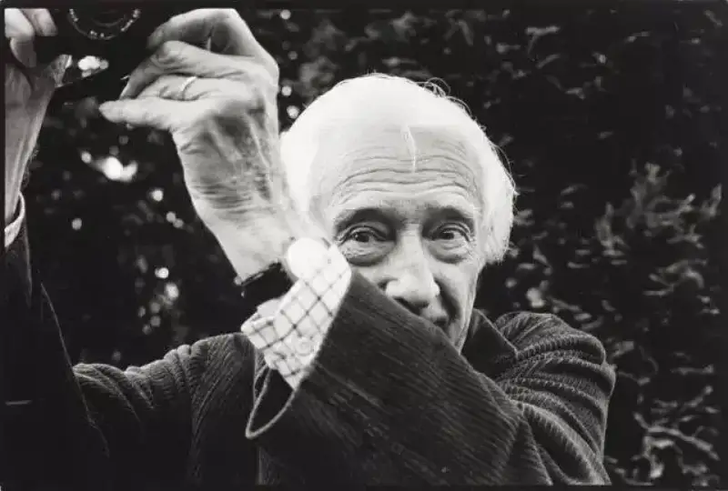
“Because I was shy,
I usually got up very early and went to bed very late,
which gave me more time for preparation.
The camera was truly like a channel of mine,
through which I came to know the world.”
His camera never left him,
and his eyes were always watching.
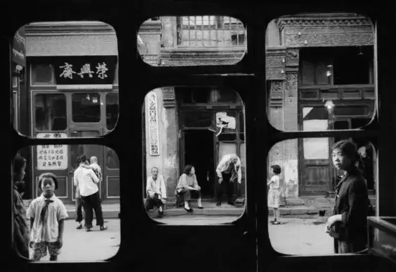
Marc Riboud once gave six “gifts” to the Shanghai Art Museum. One was a work called Liulichang, shot in 1957. At the time, Marc and his first wife were shopping in Liulichang in Beijing. His first wife was an American sculptor, born in Mexico, with dark skin, and their arrival drew many onlookers. His wife was choosing seals, while Marc grew impatient. “You women always like buying expensive things,” he said, as he aimed his lens out the window. The image was divided by the window into several small, independent frames. The little girls in the lower right and lower left corners both wore red scarves and looked toward the lens. At the time Marc thought they had been sent to watch him. Decades later, he liked to call them “little angels.”
He did not think language was a necessary tool for a photographer,
He relied on his eyes and intuition.
“Although I do not speak Chinese,
I speak from my heart,
and that is what matters most.”
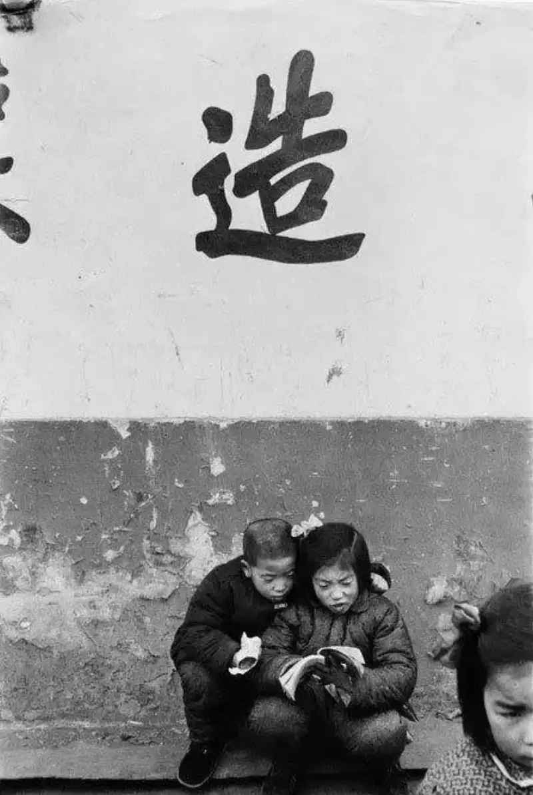
A child absorbed in a picture book (Beijing, 1957)
In 1954 Capa sent Marc Riboud to Britain, and told him to learn English while finishing his shooting assignments. In the end his English did not improve at all, but he still took a body of excellent photos. It was the same in India and China. He photographed China for 50 years and still could not speak Chinese.
He never staged a shot,
even in portraits of famous people.
He only shot on the spot in a certain setting or occasion,
capturing the detail and character of a person within a historical setting.
“In the winter of 1957, I was invited to a dinner in Beijing, along with 600 other guests. The dinner was held in the front courtyard of the Wangfujing Hotel. The flat wine glasses used that night are now sold in a state-run shop. As the only foreign reporter on site, I had to obey a strange ban: I was not allowed to photograph the great leader from the front. Yet on this special night, I still managed to take an exclusive photo: Chairman Mao drinking a glass of Moutai, fully facing the camera.” Years later, you could still feel his excitement as he told the story.
In 1971, Premier Zhou, chatting with a former French education minister, held up two fingers and said: “In France I learned only two things, one is Marxism, and the other is Leninism.” Marc quickly captured this moment, and it became this classic portrait.
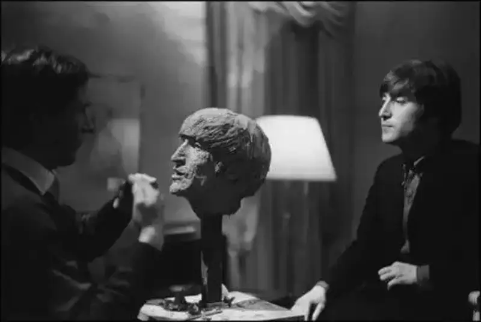
Lennon (1964)
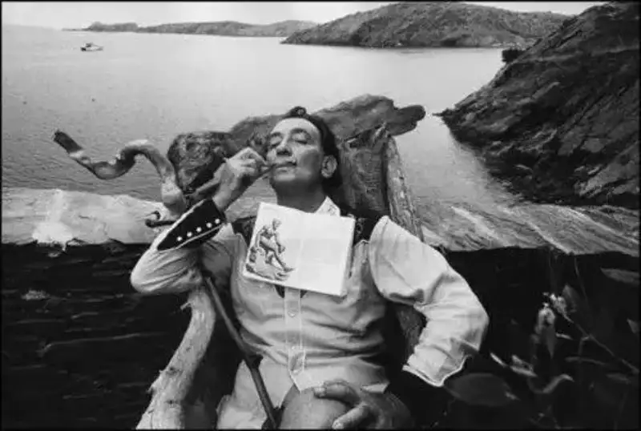
Dali (1963)
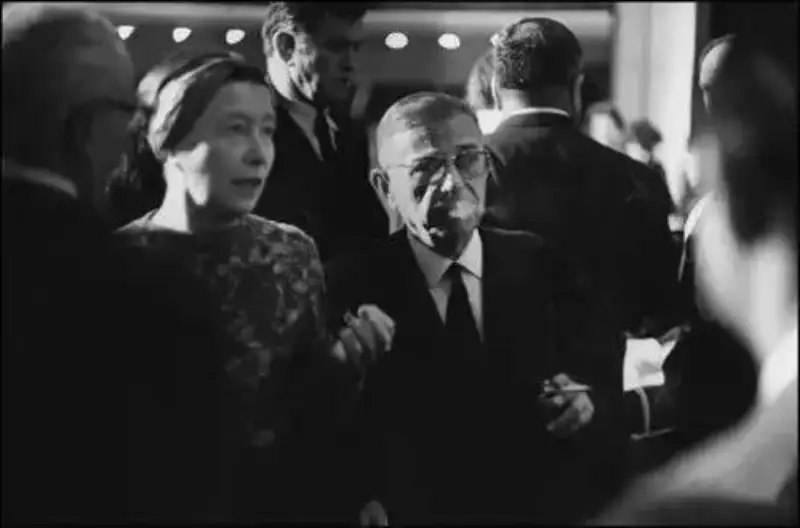
Jean-Paul Sartre and Simone de Beauvoir (1967)
Marc Riboud photographed many politicians, artists, philosophers, and stars of his time. He was proud of that. Yet what he photographed more of was ordinary people and subtle moments: everyday scenes of common people and vivid details.
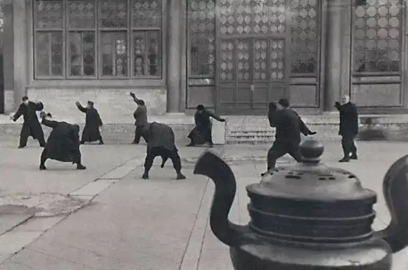
People doing tai chi in the Forbidden City. Slow movements. This thousand-year-old exercise still has many skilled practitioners.
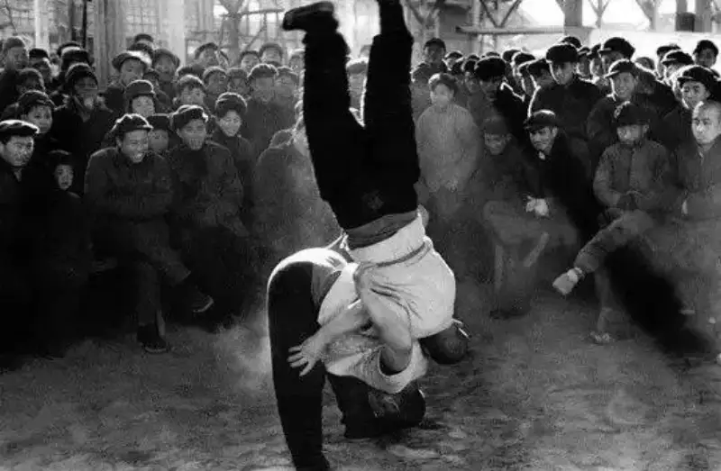
Acrobats wrestling at Tianqiao, Beijing
He said:
“I like to photograph very small details,
details that others do not notice,
I think they are very important.
God is in the details. ”
“Photography cannot change the world,
but it can show the world,
especially when the world itself is constantly changing.”
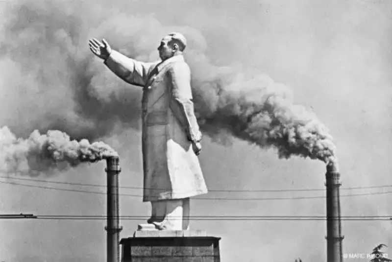
By the Yangtze River in Wuhan. A statue of Chairman Mao stands between two chimneys, a symbol of China's new industrialization, 1971
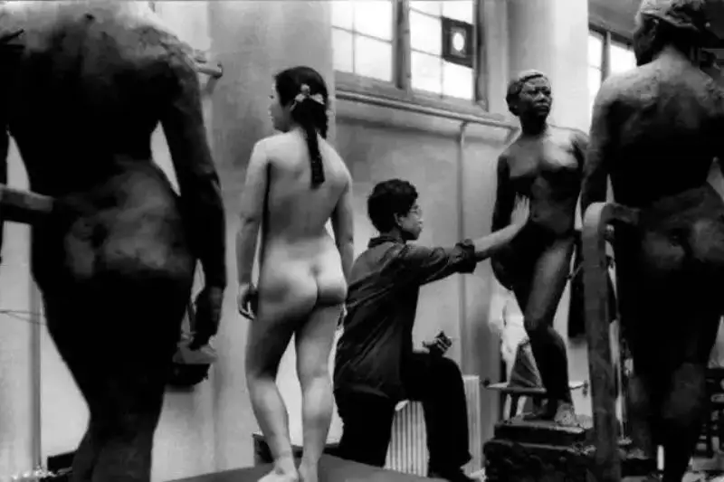
In 1965, a life model in the sculpture class of the China Academy of Fine Arts, before such models were banned. They soon disappeared from Chinese art education, and when they reappeared 20 years later they still faced criticism and discrimination.
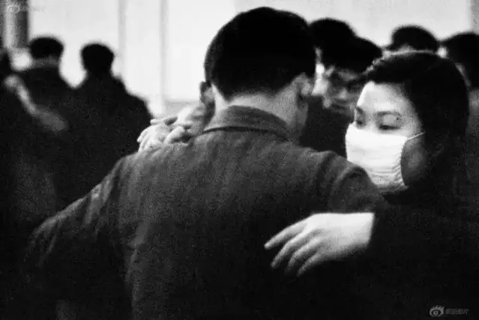
In 1965 at Peking University, he shot weekend dances and female students dancing in masks. Such scenes would disappear from the life of ordinary Chinese people for 20 years.
The forced absence of reality in the images of Chinese society during a certain historical period was filled in by Marc Riboud through his steady observation.
He liked to revisit old places,
because for him
every place and every view
was like an old friend,
worth visiting often,
to see the change.
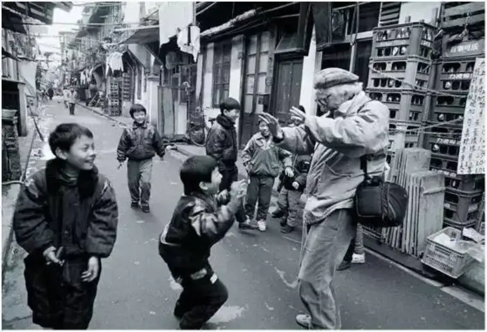
Marc Riboud returns to Shanghai. (Photo by Xiao Quan)
He said:
“Now I spend most of my time
looking at the contact sheets of my negatives.
I publish books and have many projects.
I make a living from my archive.
Every evening I look at my photos with a magnifying glass.
I have no regrets.”
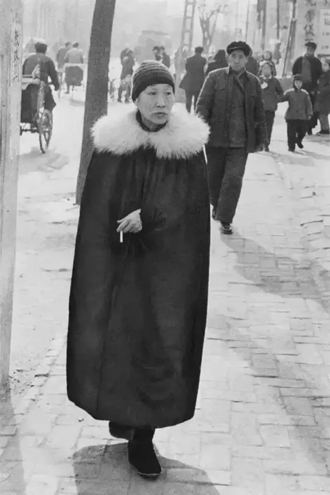
In the winter of 1957, on Wangfujing Street, he sensitively aimed his lens at a strange old noblewoman walking toward him. She wore a black cloak down to her ankles, trimmed with white fox fur at the collar, a cigarette between her fingers, and an arrogant gaze. Against a Beijing street full of work clothes, her appearance looked absurd and unreal, yet it seemed as if it could happen at any time, perhaps on some street corner.
More than 30 years later he added his feeling to the caption: “In an era when private property was confiscated, did this noblewoman get through safely?” Before these historical images, Marc himself once more became a viewer.
At 80 he said,
“My vision for the world is simple.
Each new day,
I want to go see the city,
take new photos,
meet people,
and wander by myself.””